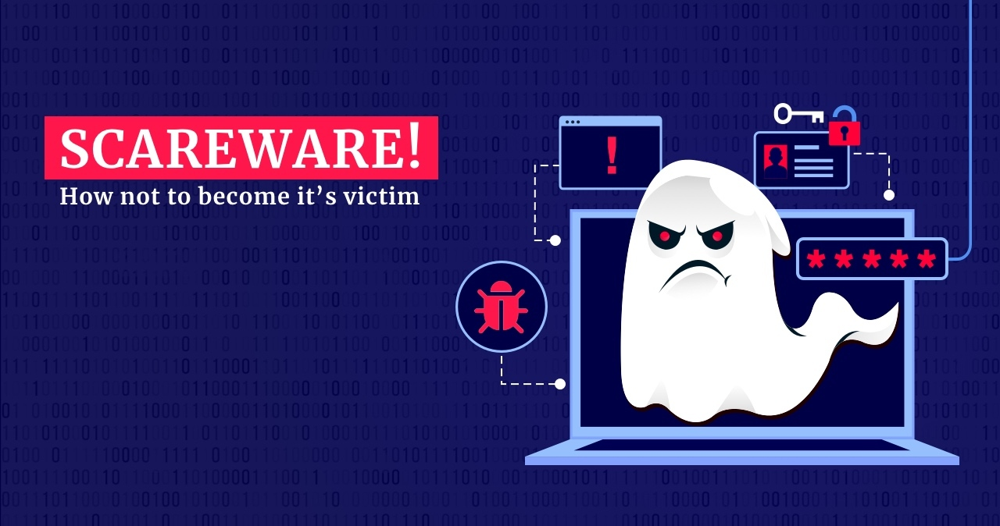
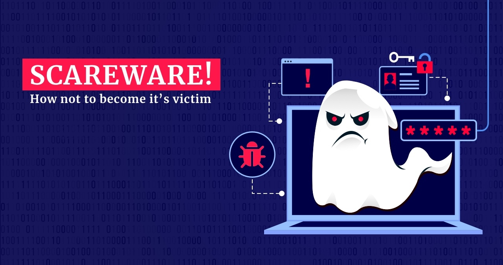

Condado de Cabarrus, 2018
No ano de 2018, o Condado de Cabarrus, nos Estados Unidos, enfrentou prejuízos de USD 1,7 milhão devido a um golpe de engenharia social e BEC.
Hackers se passaram por fornecedores do condado por meio de e-mails maliciosos, solicitando que os pagamentos fossem feitos em uma nova conta bancária.
Após a transferência do dinheiro, os golpistas desviaram os fundos para várias contas, apresentando documentação aparentemente legítima.
Partido Democrata, 2016
Durante a eleição presidencial dos Estados Unidos em 2016, ataques de spear phishing resultaram no vazamento de e-mails e informações do Partido Democrata.
Esses vazamentos podem ter influenciado o resultado da eleição, que culminou na vitória de Donald Trump sobre Hillary Clinton. Os hackers criaram um e-mail
falso no Gmail, convidando os usuários a alterar suas senhas devido a atividades incomuns. Assim, tiveram acesso a centenas de e-mails contendo informações
confidenciais sobre a campanha de Clinton.


 
